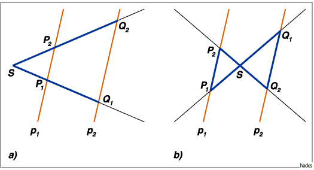

Strahlensätze
Die Strahlensätze, auch zentrische Streckung genannt, folgen aus den Ähnlichkeitssätzen für Dreiecke.
- 1. Strahlensatz
- Werden zwei von einem gemeinsamen Scheitel S ausgehende Strahlen von zwei Parallelen p1,p2 geschnitten, so verhalten sich die Abschnitte auf einem der Strahlen wie die entsprechenden Abschnitte auf dem anderen Strahl (s. linke Abbildung):
Daraus folgt auch, daß jeder beliebige Abschnitt auf einem Strahl zu dem entsprechenden auf dem anderen Strahl ins Verhältnis gesetzt werden kann.

- 2. Strahlensatz
- Werden zwei von einem gemeinsamen Scheitel S ausgehende Strahlen von zwei Parallelen p1,p2 geschnitten, so verhalten sich die Parallelenabschnitte wie die zugehörigen Abschnitte auf einem der Strahlen (s. linke Abbildung):
Die Strahlensätze gelten auch, wenn der Scheitel S zwischen den Parallelen liegt (s. rechte Abbildung).